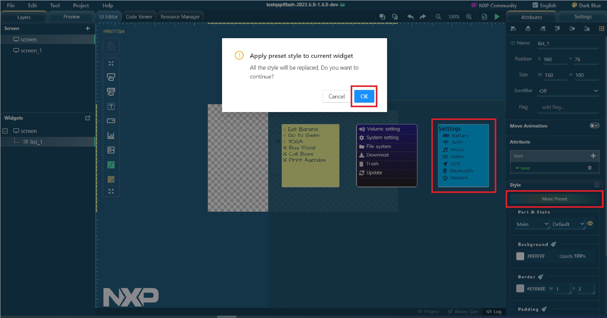

widget_details
style
preset_style_usage
Preset style usage
Click the
More Preset
button. It lists the default style of this widget. Select one to apply.
Note:
Use the default preset style.
Figure:
Default preset style
